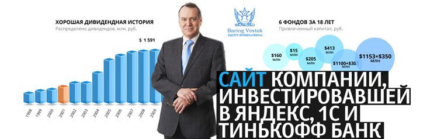
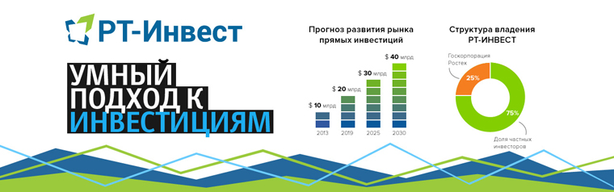
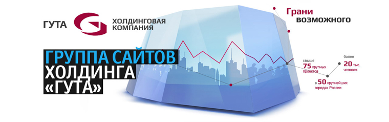

Сайт инвестиционной компании Baring Vostok Capital Partners (BVCP)
Наши пожелания были выполнены целиком и полностью, сроки выдержаны, креативность дизайнеров была на уровне

- Параллаксный скроллинг.
- Динамические графики инвестиционного портфеля (AJAX, CSS3).
- Интеграция с личным кабинетом инвестора.
- Версия сайта на английском языке.
- Адаптивный дизайн.
Сайты на поддержке Individ с 2014 года.
Личный кабинет клиента международной инвестиционной компании
Concern General Invest
- Редактирование личных и учетных данных пользователя, 4 типа паспортов/удостоверений с автозависимыми полями,
заведение и поддержка нескольких банковских счетов в 13 валютах. Подтверждение всех изменений через ввод SMS-кода (интеграция с системой Заказчика). Сервисы авторизации и восстановления/смены пароля.
- Поддержка до 2 договоров в одном профиле пользователя (документы, отчеты, поручения меняются в зависимости от выбранного договора).
- Нотификация о непрочитанных сообщениях и неподписанных документах.
- Прием торговых и не торговых поручений от клиентов, фильтр поручений по периоду, статусу (в обработке, доставлено, исполнено, отклонено), типу поручения (вывод/перевод денежных средств, конвертация валюты, совершение сделки с ценными бумагами, прочее).
- Индивидуальные шаблоны создания поручений для каждого
из 5 типов, взаимозависимые поля: тип поручения (лимитные/по рынку), вид сделки (покупка/продажа), валюта, тип расчетного счета списания/зачисления, сумма. Возможность создать аналогичное поручение или отозвать имеющееся. SMS-подтверждение создания поручений.
- Формирование 12 типов печатных форм поручений из данных клиента в формате PDF . Экспорт поручений с сайта на сервер Заказчика.
- Подготовка документов на подпись, фильтр по периоду, статусу (подписан/не подписан), типу (сводные документы/другие поручения). Скачивание документа в виде PDF-файла, подписание документов клиентом через подтверждение по SMS. Система обмена документами с сетевой папкой Заказчика по Cron, автоматический разбор документов по маске.
- Предоставление отчетности клиентам в виде списка генерируемых в формате PDF отчетов с фильтром по периоду и типу (ежедневный, ежемесячный, ежеквартальный), скачиванием файла. Импорт отчетов.
- Система технической поддержки — создание пользователями тикетов с описанием и подгрузкой файлов, переписка с менеджером техподдержки. Фильтрация обращений по дате и поиск их по теме или сообщению.
- Общая лента новостей компании с подгрузкой файлов, вывод важного сообщения для клиентов на главной странице с возможностью скрыть его после прочтения. Обратная связь.
- Зеркальная версия личного кабинета на английском языке с оптимизацией процесса формирования документов в соответствии с особенностями английского языка.
- Адаптивный дизайн для 4 разрешений (сайт перестраивается под различные устройства).
Входит в группы портфолио:
Банки и финансы16
Личные кабинеты15
Технически сложные сайты15
Рабочие сайты не для красоты7
Проекты текущего года15
ГРУППА САЙТОВ ПРОМСВЯЗЬБАНКА
upravlyaem.ru
Сайт управляющей компании Промсвязь
spbconf.ru
Сайт Санкт-Петербургской международной банковской конференции SIBC
psbinvest.ru
Сайт инвестиционных услуг Промсвязьбанка
Сайт Санкт-Петербургской международной банковской конференции SIBC
- Фоновая видео-панорама на главной странице.
- Фотогалерея (15+ альбомов, 1000+ фотографий).
- Архивация сайтов прошедших мероприятий.
- Зеркальная версия сайта на английском языке.
- Программа конференции, структурированная по дням.
Сайт инвестиционных услуг Промсвязьбанка
- Ежедневный аналитический обзор: валютные и денежные рынки, рынки акций, календарь дивидендов, обзор сектора и др.
- Расширенный раздел «FAQ» (описано 50+ типовых вопросов)
- Формы заявки на открытие брокерского счета, индивидуального инвестиционного счета и консультацию.
Сайт управляющей компании Промсвязь
- Меню, оформленное в виде динамической карусели.
- Калькулятор доходности ПИФов.
- Калькулятор накоплений.
- Тест «Какой вы инвестор?».
- Расширенный раздел «О компании», включающий в себя историю компании с 2002 года, миссию и ценности, список учредителей и партнеров и лицензии.
- Раздел «Раскрытие информации» с фильтрацией по фондам.
- Интерактивная карта пунктов продаж с геотаргетингом контактной информации.
Сайт Московского коммерческого банка
- 3 формы кредитных заявок.
- Калькулятор вкладов.
- Интерактивная карта офисов и банкоматов
- Личный кабинет клиента.
- Курсы валют.
- Расширенный раздел «О Банке», включающий в себя финансовую отчетность, реквизиты, внутренние документы, лицензии и рейтинг.
- Англоязычная версия сайта.
Сайт на поддержке Individ с 2007 года.
Сайт и фирменный стиль инвестиционной компании «РТ-Инвест»

- Интерактивный блок с командой.
- Timeline «История компании».
- Динамические графики по отраслям инвестирования.
Корпоративный сайт негосударственного пенсионного фонда «Стройкомплекс»
- Каталог пенсионных программ для физических и юридических лиц с возможностью скачать и заполнить анкету на получение пенсии.
- Иллюстрированная инструкция, как стать клиентом фонда.
- Комплекты документов для скачивания (заявления, договоры, анкеты) по обязательному пенсионному страхованию и негосударственному пенсионному обеспечению.
- Раздел «Раскрытие информации фонда»: учредительные и отчетные документы с фильтром по годам.
- Сервис «Вопросы и ответы» с возможностью задать свой вопрос.
- Списки новостей и вакансий.
- Формы «Заказать обратный звонок» и «Связаться с нами».
- Поиск по сайту.
- Адаптивный дизайн (отображение контента оптимизируется под разные устройства и разрешения экранов).
Личный кабинет участника
- Список договоров по обязательному пенсионному страхованию и негосударственному пенсионному обеспечению.
- История взносов с интеграцией данных из системы Заказчика и формированием PDF.
- Автоматическая генерация заявки на изменение данных о физическом лице в HTML-формат.
Верстка и программирование сайта банка «СОЮЗ»
- Адаптивный дизайн для 5 разрешений.
- Калькулятор кредитов и вкладов.
- Сервис сравнения кредитов и депозитов.
- Подборщик банковских продуктов.
- Конфигурирование процентных ставок и выбор валюты для вкладов и кредитов.
- 3 формы онлайн-заявок.
- Офисы и банкоматы на карте и списком.
- Взаимодействие с системами банка через веб-сервисы (SOAP).
- Версия сайта на английском языке.
- Геотаргетинг вакансий и тарифов.
- RSS-лента новостей.
- Форма заказа обратного звонка.
- Опросы клиентов о качестве обслуживания.
- Интеграция с системой Orphus.
- Версия сайта для слабовидящих: крупные шрифты, контрастные цвета.
Сайт холдинговой компании «ГУТА»
Сайт медицинского центра Гута Клиник

Сайт ГУТА-БАНКа
- Подборщик вкладов.
- Депозитный калькулятор.
- 4 вида кредитных калькуляторов.
- Форма онлайн-заявки на открытие вклада.
- Форма обратной связи «Похвалить/Пожаловаться/Предложить».
- Геотаргетинг отделений и банкоматов.
Сайт страховой компании «ГУТА-Страхование»
- Расчет стоимости страховки на квартиру, автомобиль и путешествие.
- Оформление страховки онлайн.
- Онлайн-консультант.
- Версия сайта на английском языке.
Сайт холдинговой компании «ГУТА»
- Анимированная навигация по направлениям деятельности холдинга.
- Бегущая строка новостей.
- Фильтр вакансий по направлениям деятельности компании.
- Форма отправки резюме (10+ пунктов).
Cайт инвестиционно-консалтинговой компании VIYM
- Минималистичный дизайн.
- Полигональная графика.
- Адаптивный дизайн (отображение контента оптимизируется под разные устройства и разрешения экранов).
- Фильтр проектов и новостей по регионам и инвестиционным платформам с подпиской на рассылку.
- Версия сайта на английском языке.
- Подробный раздел «Команда» с фильтром по структуре компании.
Сайт банка Nordea
- 3 вида кредитных калькуляторов.
- 4 формы заявок на кредиты.
- Сервис сравнения банковских карт.
- Адаптивный дизайн.
- Архив аналитических отчетов по разделам: рынки сегодня; марко, валюты, ставки; рынок ценных бумаг.
- Форма обращения в службу контроля качества (10+ полей с подсказками).
- Список вакансий с фильтром по городам и направлениям.
- Зеркальная версия сайта на английском языке.
- Личный кабинет частного лица и личный кабинет бизнес-клиента.
- Минималистичный дизайн.
- Фотосессия сервиса на разных устройствах.